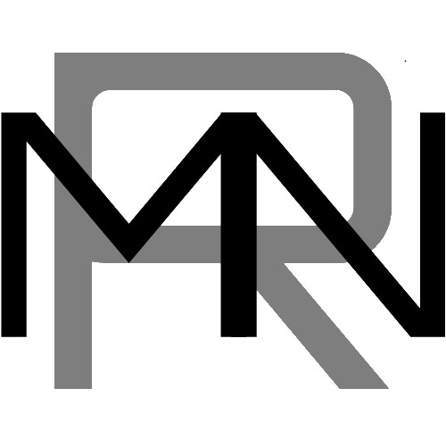

<div style="position:absolute; top:0; bottom:0; left:0; right: 0; display: flex; flex-direction: column;">
  <mat-toolbar color="primary">
    <span>
    <button id="menuButton" mat-button (click)="toggle()">
      <mat-icon>menu</mat-icon>
    </button>
  </span>
  <span class="pageTitle">
    Home
  </span>
    <span class="fill-remaining-space"></span>
    <span>
    
  </span>
  </mat-toolbar>

  <mat-sidenav-container>
    <mat-sidenav #sidenav mode="over" [(opened)]="opened">
      <mat-list *ngFor="let t of menuTiles">
        <mat-list-item routerLink='{{t.href}}' (click)="toggle();">
          <button mat-button color="accent">
          <mat-icon color="accent">{{t.avatar}}</mat-icon>{{t.title}}</button>
        </mat-list-item>
      </mat-list>
    </mat-sidenav>
    <mat-sidenav-content #sideNavContainer>
      <router-outlet></router-outlet>
    </mat-sidenav-content>
  </mat-sidenav-container>
</div>
